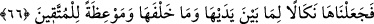

“evet” diye işâret ediyorlardı. Buradan, maymunlaşanlarda akıl ve anlayışın kaldığı
anlaşılmaktadır.
Bunlardan önce de maymunlar vardı. Maymuna çevrilen insanlar maymunların ataları
değildir. Bunlar, yaptıklarının cezâsı olarak maymuna çevrildiler. Zâten bunlar
doğurmamışlar ve üç gün içinde hepsi ölmüşlerdir. Dünyâdaki maymunların nesli
kendilerinden öncekilere dayanır. İsrâîloğulları’nın cezâ olarak maymuna çevrilmesi,
amellerinin çirkinliği ile maymunların çirkinliğinin birbirine benzemesindendir.
66. Biz bunu (maymunlaşmış insanları), hadiseyi bizzat görenlere ve sonradan
gelenlere bir ibret dersi, müttakîler için de bir öğüt vesîlesi kıldık.
Biz İsrâîloğulları’nın sûretlerinin hayvan şekline sokulmasını, kendilerinden önceki
ve sonraki ümmetlerin aynı günahları işlemelerini önlemek için bir ibret vesîlesi kıldık.
Zira onların başına gelenleri önceki ümmetlere gönderilen kitaplarda zikrettik ve onlar
bundan ibret aldılar. Bu haberler sonradan gelenlere de ulaştı, onlar da ibret aldılar. Bu
olay, İsrâîloğulları’ndan, yasağın çiğnenmesini önlemeye çalışan sâlih kimselere veya
bu olayı işiten her müttakîye bir ibrettir.
Sa’dî şöyle demiştir:
Kuş, dâne tarafına doğru yakın gitmez
Çünkü başka kuşun böyle tuzağa düştüğünü görür.
Sen başkalarının musîbetinden ders al,
Başkaları senden ibret almasın!
Benî İsrâîl’e gelen belâ ve ziyanlar ilâhî ihsânların kadrini bilmediklerinden,
nimetlere nankörlük ettiklerinden, firkat zilletini vuslat izzetine tercih etmelerindendir.
Bizden evvelki ümmetlerin cezâsı yerin dibine geçirilmek veya bedenen sûretlerinin
değiştirilmesi şeklindeydi. Bu ümmetin cezâsı ise, kalblerine verilmektedir. Kalblere
verilen cezâ, cesedlere verilen cezâdan daha şiddetlidir. Nitekim Allah Teâlâ:
“Onların gönüllerini ve gözlerini değiştiririz de sanki onları evvelce hiç îmân
etmemişe çeviririz” (el-En’âm, 6/110) buyurmaktadır.
Bu, sultânların hizmetine girip de edeb öğrenmeyenlerin ve kendi kafasınca gidenlerin
hâlidir. Kurbet (yakınlık) yaygısına hürmet ile basmayanlar, mahrûmiyeti hak ederler,
hüsrâna uğrarlar. Sultânın cezâsına çarptırılırlar. Domuza çevrilmenin alâmeti, pislik
yemektir. Haram yiyenin kalbi de bir başka yaratığa çevrilmiş demektir.
Kalbin sıfatlarının hayvânî sıfatlarla değiştirilmesinin alâmetleri üçtür. Bunlar:
İbâdetten lezzet almamak, mâsiyet işlemekten korkmamak, kimsenin ölümünden ibret
almayıp aksine gün geçtikçe dünyâya rağbeti artmaktır. Zehretü’r-riyâd’da böyle